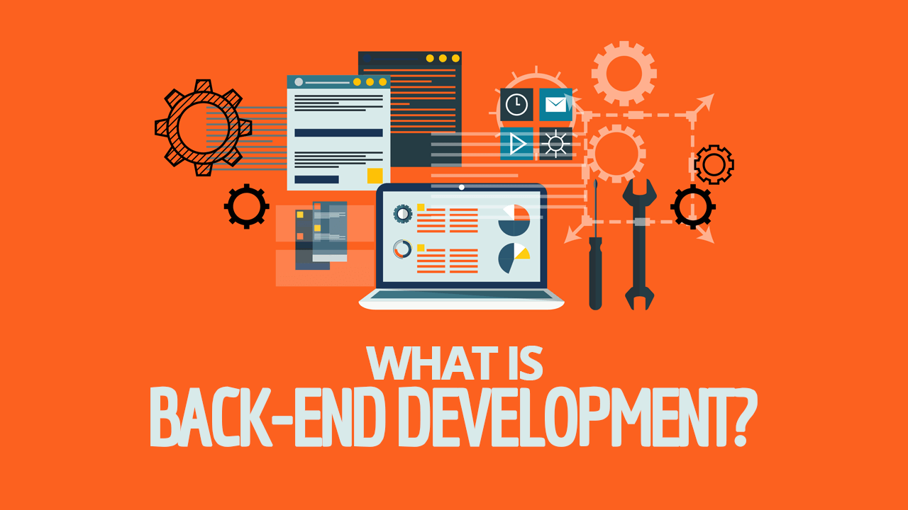

Back-end developers are responsible for writing the web services and APIs used by front-end developers and mobile application developers.
A back-end web developer is responsible for server-side web application logic as well as the integration of the front-end part.

Back-end Developer duties and responsibilities
Be involved and participate in the overall application lifecycle
Focus on coding and debugging
Collaborate with Front-end developers
Define and communicate technical and design requirements
Provide training, help and support to other team members
Build high-quality reusable code that can be used in thew future
Develop functional and sustainable web applications with clean codes
Troubleshoot and debug applications
Learn about new technologies
Stay up to date with current best practices
Conduct UI tests and optimize performance
Manage cutting-edge technologies to improve applications
Collaborate with multidisciplinary team of designers, developers and system administrators
Participate in conferences and educational programs
Follow new and emerging technologies
Back End Developer Requirements:
Proficiency with Python, PHP, Ruby on Rails, SQL & API’s.
Understanding of server-side – HTML, CSS & JavaScript.
Good problem-solving skills.
Excellent verbal communication skills.
Good interpersonal skills.
Expected Salary: £45K
Curtis:
"I was always interested in computing in school so decided to go to University to further my knowledge. I didn’t have the best interpersonal skills and felt uncomfortable speaking in front of people. I really enjoy the challenge of developing complex code. Working as a back-end developer I don’t need to speak with clients as often."